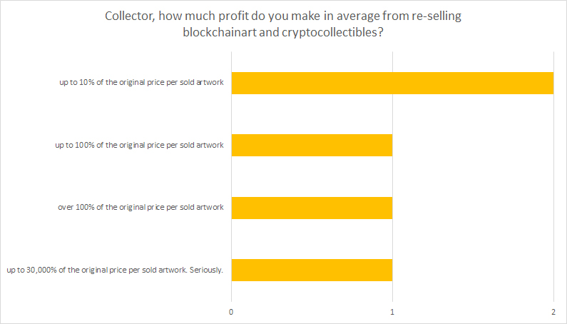

Role, Professional Background, Origin & Gender
Following up a discussion on the RAREAF2 telegram channels, we initiated a survey addressing blockchainart and cryptocollectibles artists, collectors, gallery owners and programmers, and asked them: Why are you active in the field? Which platforms do you use? How are you producing your artworks? How much profit do you make? And we wanted to learn about their ideas on NFT, education and value. We received 29 answers by May 11th, and want to thank all contributors!
As most questions required text answers, we'll need some more time to to write all this up. As for the moment, we provide all answers unfiltered, because we think this is also in the raw version useful for further discussions regarding blockchainart related topics and contributes to the further development in the field. So: this for now; more to come.
You want to access the survey? GO!
Quick access:
Role, Professional Background, Origin & Gender . dApps & Platforms used . Investment & Profit . Focus: NFT as a Term . Focus: Education . Focus: Valuable Features of Blockchain Technology . Focus: Artists . Focus: Collectors . Focus: All People neither Artist nor Collector

| Generic |
| nifty |
| Niftys |
| Rare Digital Items |
| Digital Goods |
| Immutable Token |
| digital asset |
| cryptocollectibles |
| Art specific |
| blockchain art |
| cryptoart |
| rare art |
| Rare Digital Art |
| Rare Art Token |
| Game specific |
| Rare Game Items |
| items |
| assets |
| blockchain basics |
| that they have value |
| Proof of Work |
| How to use a crypto wallet |
| How to setup web3 (metamask) and how to trade against fiat money |
| how easy it is to get started. I think most platforms need a better onboarding and education mechanism to get newbies motivated ! |
| The principles of value and understanding of ownership. |
| How to purchase a cryptocurrency safely and use a wallet safely. |
| please integrate metamask or a wallet in browsers |
| Hands-on experience, experiment and risk-taking |
| How to use the platforms. |
| how blockchain works and what does it all mean |
| Read the user agreements! |
| The art can be viewed by all, but only owned by those with verifiable editioned tokens |
| to not fear but embrace it |
| Benefits of blockchain for art and how to use blockchain basic tools (wallets, cryptocurrency) today and for what |
| What a bearer asset is and how blockchain allows digital bearer assets |
| what is a token and what is metadata |
| Bitcoin and counterparty |
| Robin Hood. Take power back from evil institutions. |
| That the sky is the limit :) ... AKA: The world is your oyster. |
| IMMUTABILITY/PROVABILITY OF BLOCKCHAINS |
| How to create a wallet and connect it to a dapp. |
| How to read the blockchain to verify what a site tells them. |
| The most important thing to remember is that any art is only as valuable as it is whoever is collecting it. |
| How scarity and proof of ownership is an advantage. How to get Eth and install metamask. |
| persistance |
| smart contracts that remunerate artists on secondary sales and automatically. The possibility of creating digital assets. The possibility of a new economic alternative for artists. The possibility of digital collaboration that is fairly ascribed, attributed and remunerated. |
| Transparency and Control |
| Digital scarcity and speed of art delivery are the most important features of rare digital art. |
| The direct contact between artists and collectors. |
| the capacity for artists to receive part of the revenue of a resale, so that if their art becomes super popular later, the artist won't be sitting on the sidelines not selling anything new and seeing all their old works trade hands for fortunes without getting something. |
| Fighting censorship |
| Automatic contracts that will automatically pay royalties. Providing a way to pay artists for work they put online and lose control over. Providing a way to trace an image back to the artist. |
| ultrafast sharing, if becomes viral then is the love |
| Proven ownership, automated post-sale royalties for creators, provenance, a new medium for art creation, shifting existing power structures, fun |
| Ownership, immutability, digital scarcity. |
| provability of origin |
| IP protection, digital ownership, autonomous art, token economies. |
| potentially valuable features include transparency and easy transfers |
| A means of creating a market for otherwise unsaleable works. |
| easy access for everybody (once you know the concept and tech) |
| Rarity, Authenticity... however we need to find a right secured and standard way to link physical assets to token and ensure real ownership! |
| Imutablilty |
| Provenance, permanence and transparency |
| Scarcity; Ability to Track Chain of Custody; Decentralize Trading Platforms |
| A whole new frontier of platforms and mediums for art to be traded and consumed. |
| The mass availability of direct connection with the main players and entire audience worldwide |
| unalterable ledgers |
| Rare digital art is the biggest for me. Provenance and reliable data about the history of work is also important. |
| Provenance. |
| Direct connection between artists and collectors, proof of ownership, possibility to showcase art in VR, trading artworks as an collector. |
| After I make the art I compose it or crop it to fit the best view experience for the platform I am selling on. Sometimes I write a blog post about the art and publish it and use the url from that to put in the art exif header. I use exiftool to put my name, website, copyright, title, description and other information in the exif headers of the digital image file. I upload it to my AWS bucket and then I tokenize it using the SuperRare site. For KnownOrigin I have to fill out a google form and upload the image to them. Then I go into marketing and use social media to announce the new work. |
| In this very moment I digitize my A3 paper pieces |
| Upload to globalupload, describe, tokenize |
| Dada does it automatically with every digital drawing |
| I suss out which works of mine have had the greatest organic reach on social media, then tokenize high resolution versions of those compositions. |
| I dont, from the start I look at a token or blockchain record of anykind as -part of- the artwork and not a representation of it. |
| Yet to be discovered. Working on research lol. |
| Create 2 versions with a compressed resolution for online viewing and original full resolution |
| Usually I just need to make sure the size is going to work with whatever site I am tokenizing at. My work is already digital so not much left to do. |
| I create gif, which takes many steps of using different tools for digital art, make a interesting name and description of the work. |
| I’ve come across the recently launched EditionalApp which makes it extremely easy for anyone to create, share, sell and trade their collectibles. |
| Creating highres versions, that don't exceed filesize requirements. Writing a description, adding tags. Sometimes uploading it to my own server. |
| Adobe - Processing |
| iPad with Apple Pencil, Procreate app, Paint.net, unFREEz |
| Glitché, Chromalab, Mirrorlab, Ganbreeder and many more |
| I usually use Weavesilk.com (a generative art tool) to create fast sketches, which I then either edit with GIMP or directly feed into a Deep Style AI algorithm (deepdreamgenerator.com), whose output I then adjust in GIMP, possibly adding some animation to it if I tihnk it's better like that :) |
| Art-DCGAN - http://bit.ly/art-dcgan, GIMP, Photoshop, Audacity, Blender, OsciSudio, Inkscape, Macintosh Preview app, iMovie, broken hacked document scanner, AWS GPU compute instance, MacBook, giphy, oscilloscope, https://futureboy.us/stegano, http://dalpix.com/blog/oscilloscope-drawing-everyone |
| Adobe Photoshop and Adobe Illustrator |
| Web coding, Adobe creative suite, |
| Gimp, Inkscape, Blender, WebAR, some .js but also print, cyanotype and analogue photo |
| For digital art I use Dada |
| I use many tools and techniques for my work. Often I am creating compositions digitally, then processing them using vintage video equipment and VHS. |
| MS Paint, Tape Recorder, Cassette Tape (magnetic), Android phones |
| Gimp |
| Pro tools, final cut, human brain |
| After Efects, Photoshop, Illustrator, Atom, Sublime Text, HTML5 |
| Processing language, paint.net software |
| VR: Gravity Sketch, Tilt Brush, Blocks, Medium, AnimVR. Ganbreeder.app. Google Deep Dream. Adobe PS and Premiere. Unity. |
| I use a variety of mediums,including: digital and analogue photography, painting, doodling. |
| Various glitch apps (glitché, chromalab, mirrorlab), Photoshop, Fotor, ezgif.com. |
| Receptive audience, the community of artists, collaboration with others, other artists have promoted my work, my art sells there, exposure my art does not get lost in a large market |
| is really FAST! |
| Different kinds of information, value and ownership |
| exploration |
| Figure out new biz models |
| I would like to create a real market for my artwork, which is largely digital and video based, without having to use convoluted physical methods like flash drives or other media. |
| Destroy middlemen and gatekeepers |
| As way to experiment with different ways to make art |
| It IS the direction that open source creation is going in |
| Motivation is to have an environment with scarce versions of my art. |
| I can sell art immediately to anybody in the world, to prove the ownership of the the artworks, I've sold or have bought. I can see the history of mysartworks after I've sold them. BC gives my opportunities to create new types of art. |
| As an artist, provenance is important to establish a work as my own, and doing so on the blockchain is the natural solution. |
| Because I can autonomically sell my art without middlemen. |
| I would like to see it on digital screens. It would be nice to have a subscription model for people to display my art and I get paid for times it is shown. I have enjoyed having people print it on canvas and display it, I enjoy seeing it in cryptoVexels a VR world, I am going to display it at my library |
| I really need a place where to sell my real pieces too |
| As many ways as possible |
| since I also work with moving images, something that holds that too |
| In ways that don't exist yet. |
| I would love to use blockchain as a means of verifying video works designed to be displayed on large screens at high resolutions, almost in the manner of a canvas |
| not on anything mac |
| A platform similar to Spotify |
| Highest res quality viewable onscreen without overhauling viewer's experience |
| No preference, but there are many options from digital displays in real life to physical prints to online options like social media, websites, etc |
| Ofcource! What artist woldn't like it?))) |
| However those who collected it wish to display it. |
| Digitally, printed, in VR - no preference, as long as many people enjoy it. |
| I like to own unique pieces of digital art, both for their concept, their aesthetics but above all because they are the expression of the contemporary. And I hope it's also an investment for the future. |
| to support artists on DADA, to help jumpstart the rare art market, because I can. |
| Reputation |
| It is cool to have all my art in one place and portable. |
| I want to support and own art from fellow artists that help me. |
| There are amazing cutting edge artists and a clash of new art currents. |
| Because value is king |
| I enjoy owning and collecting. I enjoy being part of and supporting the ecosystem. Investment, but that is secondary. |
| I am a lover of art |
| It's awesome to be part of something so raw and new |
| investments and beauty to keep, and to create awareness for mass adoption of blockchain tech |
| The next bull run will incude extreme speculation in blockchain art |
| Proven Scarcity |
| I have crypto currency from my art that I can use to support other artists. |
| I sell art, I buy art, it's quite normal for me. The digital channel only speed up things. |
| Privacy, security, speed, convenience |
| Easy and fun. I enjoy being part of and supporting the ecosystem. |
| very specific medium |
| Digital ownership |
| it fits in my supertiny house |
| Get around regulations, privacy |
| Easy to store. Track owners. Easy to determine Value. |
| Look at it. I put it on my phone as a background. |
| I hope to have some great pieces of art and maybe make some money too, if possible. |
| Enjoy, hold, share, inherit, sell |
| Keep some. Sell some. Add to my art collection |
| nothing |
| Display it and share it in new ways |
| put it up the wall of a friend, sell it, keep it forever |
| Look at it and brag to friends |
| Mostly hold. |
| We need a device :) connected in web3 to show our pieces. |
| Smart contract powered push service to any device globally. Distributed Display of Art (aka DDoA) attack |
| Any how. |
| In a way that differentiate it from digital art |
| in every possible way - especially physical representation |
| not on anything mac |
| Considering getting a digital frame for the house. I’ve had shirts and other wearables printed with my favorites. |
| As a programmer of my own art I wanted a way to do micropayments for one of my pieces. I wanted to learn blockchain for understanding its best usages. |
| I enjoy them aesthetically |
| Blockchain enthusiast and early bird adopter |
| They will moon, bragging rights, to look at |
| The lulz |
| i love crypto and its concepts of immutability /transparent provenance |
| create more art and bring more art to more people. Change the existing status quo in art. |
| For gaming, I have bought items on opensea and Book of Orbs, as well as NFT's during sales like Cryptominer world and Neondistrict |
| I am an artist |
| To push the boundaries of art and art economics. |
| Interested in new ways to protect, sell and have transparency in the field |
| I'm discovering a new unknown world and testing platforms to try to understand what bridges are missing to link traditional market to blockchains. Sometimes I'm doing that for work and sometimes for fun. I like learning my children about blockchain and like to think in the nearest future they will use blockchain as they start using Internet today. |
| I am , never thought about why |
| to have fun and see dank af memes |
| cultural immersion in revolution |